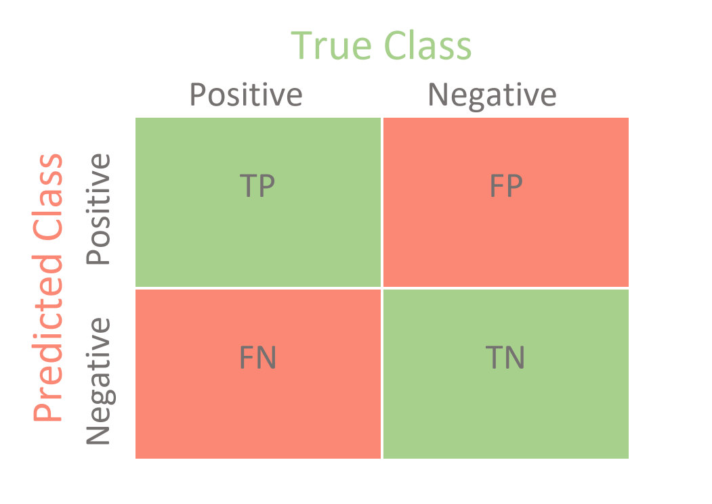

| Detection | Detection Model | Image Source | Results Output |
|---|---|---|---|
| Enabled | FairFace=Dlib; DeepFace=OpenCV | Pre-cropped | new_ff_c_p.csv, crop_df_p_opencv.csv |
| Enabled | FairFace=Dlib; DeepFace=OpenCV | In-The-Wild | new_ff_uc_p.csv, uncropped_df_p_opencv.csv |
| Enabled | FairFace=Dlib; DeepFace=mtcnn | Pre-cropped | new_ff_c_p.csv, crop_df_p_mtcnn.csv |
| Enabled | FairFace=Dlib; DeepFace=mtcnn | In-The-Wild | new_ff_uc_p.csv, uncropped_df_p_mtcnn.csv |
| Disabled | FairFace,DeepFace=None | Pre-cropped | new_ff_c_np.csv, cropped_df_np.csv |
| Disabled | FairFace,DeepFace=None | In-The-Wild | new_ff_uc_np.csv, uncropped_df_np.csv |
3 Methods
Karkkainen and Joo (2021)
3.1 The Big Picture
- Is bias prevalent in facial recognition machine learning models?
- Can one model be shown to have statistically significant less bias than the other?
- Does one model outperform the other in a statistically significant manner, in all aspects?
- Does one model outperform the other in a statistically significant manner, in certain aspects?
- This is where we can dive into “conventional” bias
Thoughts on Bias
We need to be careful how we define and use bias. Statistical bias is essentially error, and we could be crossing our definitions between statistical bias and conventional bias.
3.2 Measuring Performance
Note
This performance section is important in choosing the correct models to ensure data integrity, however for the actual statistical tests, we’ll focused on more common statistics like mean and proportion.
There are four main measures of performance when evaluating a model:
- Accuracy
- Precision
- Recall
- F1-Score
Each of these performance measures has their own place in evaluating models, however, to begin to explain the differences between these models we should start with concepts of positive and negative outcomes.
- True Positive: predicted positive, was actually positive (correct)
- False Positive: predicted positive, was actually negative (incorrect)
- True Negative: predicted negative, was actually negative (correct)
- False Negative: predicted negative, was actually positive (incorrect)
These outcomes can be visualized on a confusion matrix. In the image below, green are correct predictions while red are incorrect predictions.

3.2.1 Accuracy
Accuracy is the ratio of correct predictions to all predictions. In other words, the total of the green squares divided by the entire matrix. This is arguably the most common concept of measuring performance.
\(Acccuracy = \frac{TP+TN}{TP + TN + FN}\)
3.2.2 Precision
Precision is the ratio of true positives to the total number of positives (true positive + true negative).
\(Precision = \frac{TP}{TP+FP}\)
3.2.3 Recall
Recall is the ratio of true positives to the number of total correct predictions (true positive + false negative).
\(Recall = \frac{TP}{TP+FN}\)
3.2.4 F1-Score
F1-Score* is known as the harmonic mean between precision and recall. Precision and Recall are useful in their own rights, but the f1-Score is useful in the fact it’s a balanced combination of both precision and recall.
F1-Score \(= \frac{2 * Precision * Recall}{Precision + Recall}\)
3.3 Hypothesis Testing
Our data consists of three main sets, the source input data, the Fairface output data, and the Deepface output data.
We’ll be creating our hypothesis tests by treating the source data as the basis for the original assumptions (our null hypotheses), and then using the output from Fairface and Deepface to test for statistically significant differences. Gaining a statistically significant result would allow us to reject our null hypothesis in favor of the alternative hypothesis. In other words, rejecting the original assumption means there is a statistically large enough difference between the source data and output data, and could indicate a bias in model.
We’ll be testing across different subsets contained within the data, as listed below:
3.3.1 Demographics
- Age Group
- Gender
- Race
3.3.2 Demographics’ Subgroups
- Age Group (9 groups)
- 0-2
- 3-9
- 10-19
- 20-29
- 30-39
- 40-49
- 50-59
- 60-69
- 70-130
- Gender (2 groups)
- Female
- Male
- Race (5 groups)
- Asian
- Black
- Indian
- Other
- White
3.3.3 The General Proportion Tests
Our hypothesis tests will be testing different proportions within these subgroups between the source data and the output data.
The general format of our hypothesis tests will be:
\(H_0: p = p_{\text{Source Data Subset}}\)
\(H_A: p \neq p_{\text{Source Data Subset}}\)
With the following test statistic:
\(\frac{\sqrt{n}(\hat{p} - p)}{\sqrt{p(1 - p)}}\)
With the p-value being calculated by:
\(P(|Z| > \hat{p} | H_0)\)
\(= P(|Z| > \frac{\sqrt{n}(\hat{p} - p)}{\sqrt{p(1 - p)}})\),
where
- \(n\): output data subset size
- \(\hat{p}\): output data subset proportion
- \(p\): source data subset proportion
3.3.4 Notation
Before we list the specific tests, we should introduce some notation.
Let \(R\) be race, then \(R \in \{Asian, Black, Indian, Other, White\} = \{A, B, I, O, W\}\)
Let \(G\) be gender, then \(G \in \{Female, Male\} = \{F, M\}\)
Let \(A\) be age, then \(A \in \{[0,2], [3,9], [10,19], [20,29], [30,39], [40,49], [50,59], [60,69], [70,130]\} = \{1, 2, 3, 4, 5, 6, 7, 8, 9\}\)
Let \(D\) be the dataset, then \(D \in \{Source, Fairface, Deepface\} = \{D_0, D_f, D_d\}\)
3.3.5 More Specific Proportion Tests
Using this notation, we can simplify our nomenclature for testing a certain proportion of an overall demographic.
For example, we can test if the proportion of Female in the Fairface output is statistically different than the proportion of Female from the source.
Hypothesis Test:
\(H_0: p_F = p_{F|D_0}\)
\(H_A: p_F \neq p_{F|D_0}\)
P-value Calculation:
\(P(|Z| > \frac{\sqrt{n}(\hat{p} - p)}{\sqrt{p(1 - p)}})\),
where
- \(p = p_{F|D_0}\): proportion of females from the source data
- \(\hat{p} = p_{F|D_f}\): proportion of females from the fairface output
- \(n = n_{F \cup M|D_f}\): number of data points in the gender subset form the fairface output
Additionally, we could test for different combinations of subsets within demographics. For instance, if we wanted to test for a statistically significant difference between the proportion of those who Female, given that they were Black, then we could write a hypothesis test like:
\(H_0: p_{F|B} = p_{F|D_0 \cap B}\)
\(H_A: p_{F|B} \neq p_{F|D_0 \cap B}\)
P-value Calculation:
\(P(|Z| > \frac{\sqrt{n}(\hat{p} - p)}{\sqrt{p(1 - p)}})\),
where
- \(p = p_{F|D_0 \cap B}\): proportion of females from the source data, given they were black
- \(\hat{p} = p_{F|D_f \cap B}\): proportion of females from the fairface output, given they were black
- \(n = n_{F \cup M|D_f \cap B}\): number of data points in the gender subset form the fairface output, given they were black.
These were two specific hypothesis tests, however, we’ll be testing many combinations of these parameters and reporting back on any significant findings.
From the report requirements
Also can be called “Analyses”
This section might contain several subsections as needed.
At least one subsection should describe the exploratory data analysis you did.
What modifications were necessary to make the dataset ready for analysis? (e.g. dealing with missing values, removing certain rows, replacing/cleaning text values, binning, etc)
Describe the analyses you did to answer the question of interest. Explain why you believe these methods are appropriate.
At least one subsection should describe the exploratory data analysis you did.
What modifications were necessary to make the dataset ready for analysis? (e.g. dealing with missing values, removing certain rows, replacing/cleaning text values, binning, etc)
Describe the analyses you did to answer the question of interest. Explain why you believe these methods are appropriate.
At least one subsection should describe the exploratory data analysis you did.
What modifications were necessary to make the dataset ready for analysis? (e.g. dealing with missing values, removing certain rows, replacing/cleaning text values, binning, etc)
Describe the analyses you did to answer the question of interest. Explain why you believe these methods are appropriate.
Some methods we learn in this class include distribution comparison, correlation analysis, and hypothesis testing. You are required to include hypothesis tests into the project, but feel free to use additional methods to tell a good story about the data.
3.4 Standardizing output
The model outputs for both FairFace and DeepFace do not conform to the categories provided within the University of Tennessee - Knoxville (UTK) dataset. We elected to take the outputs from each model and modify them based upon the categories specified in the UTK dataset, namely:
“[race] is an integer from 0 to 4, denoting White, Black, Asian, Indian, and Others (like Hispanic, Latino, Middle Eastern).”
“[gender] is either 0 (male) or 1 (female)”
“[age] is an integer from 0 to 116, indicating the age”
3.4.1 From FairFace
Race: The FairFace classification model had two options - one for “fair7” and one for “fair4.” The latter provided predictions of race in the following categories: [White, Black, Asian, Indian]. Of key note, the model omitted “Other” categories as listed in the race category for the UTK dataset. However, the “fair7” model provides predictions across [White, Black, Latino_Hispanic, East Asian, Southeast Asian, Indian, Middle Eastern]. We elected to use the the fair7 model, and to refactor the output categories to match those of the UTK dataset. Namely, we refactored instances of Middle Eastern and Latino_Hispanic as “Other,” and instances of “East Asian” and “Southeast Asian” as “Asian”
Age: FairFace only provides a predicted age range as opposed to a specific, single, predicted age as a string. To enable comparison of actual values to the predicted values, we maintained this column as a categorical variable, and split it into a lower and upper bound of predicted age as an integer. This split will allow us to determine whether or not the prediction correctly binned the age (i.e. \(lowerBound \leq actualAge \leq upperBound\)), and if not - how far outside of those bounds the actual age lay.
Gender: no change to outputs of “Male” and “Female.”
3.4.2 From DeepFace
Race: Racial categorical output from DeepFace includes the following categories [“middle eastern”, “asian”, “white”, “latino hispanic”, “black”, “indian”]
Age: DeepFace provides a prediction of a single, specific, predicted age. We elected to match the predicted age to be the same range as would be predicted by Fair Face. For example, if DeepFace predicts an age like “19,” we assign it the same matching category as it would have in FairFace - “10-19.” From there, we also split this category into an upper and lower bound. In spite of the fact that DeepFace does not provide any bounds or ranges on its age prediction outputs, to have a similar and fair comparison of both models, we give it those same upper and lower bounds for equitable comparison.
Gender: DeepFace outputs are “Man” and “Woman”, and we refactor those values to “Male” and “Female” respectively.
3.5 Evaluating Permutations of Inputs and Models for Equitable Evaluation
Aside from the differences in the outputs of each model in terms of age, race, and gender, there are also substantial differences between FairFace and DeepFace in terms of their available settings when attempting to categorize an image in each of these categories.
The need for this permutation evaluation rose from some initial scripting and testing of these models on a small sample of images from another facial dataset - the Asian Face Age Dataset (need citation here). We immediately grew concerned with DeepFace’s performance using default settings (namely, enforcing requirement to detect a face prior to categorization, and using OpenCV as the default detection backend). Running these initial scripting tests, we encountered a failure rate in DeepFace of approximately 70% in identifying and categorizing an image of a face.
We performed further exploratory analysis on both models in light of these facts, and sought some specific permutations of settings to determine what settings may provide the most fair and equitable comparison of the models prior to proceeding to further analysis.
3.5.1 DeepFace Analysis Options
DeepFace has a robust degree of avaialble settings when performing facial categorization and recognition. These include enforcing facial detection prior to classification of an image, as well as 8 different facial detection models to detect a face prior to categorization. The default of these settings is OpenCV detection with detection enabled. Other detection backends include ssd, dlib, mtcnn, retinaface, mediapipe, yolov8, yunet, and fastmtcnn.
In a Python 3.8 environment, attempting to run detections using dlib, retinaface, mediapipe, yolov8, and yunet failed to run, or failed to install the appropriate models directly from source during exeuction. Repairing any challenges or issues with the core functionality of DeepFace and FairFace’s code is outside the scope of our work, and as such, we have excluded any of these non-functioning models from our permutation evaluation.
3.5.2 FairFace Analysis Options
The default script from FairFace provided no options via its command line script to change settings. It uses dlib/resnet34 models for facial detection and image pre-processing, and uses its own fair4 and fair7 models for categorization. There are no other options or flags that can be set by a user when processing a batch of images.
We converted the simple script to a class in Python without addressing any feature bugs or errors in the underlying code. This change provided us some additional options when performing the analysis of an input image using FairFace - namely, the ability to analyze and categorize an image with or without facial detection, similar to the functionality of DeepFace. FairFace remains limited in the fact that is only detection model backend is built in dlib, but this change gives us more options when considering what type of images to use and what settings to use on both models before generating our final dataset for analysis.
3.5.3 Specific Permutations
With the above options in mind, we designed the following permutations for evaluation on a subset of the UTK dataset:
We processed each of the above setting permutations againnst approximately 9800 images, consisting of images from part 1 of 3 from the UTK datset. Each of the cropped images (cropped_UTK_dataset.csv) and uncropped images (uncropped_UTK_dataset.csv) came from the same underlying subject in each image; the only difference between each image was whether or not it was pre-processed before evaluation by each model.
3.5.4 Permutation Sample Results (LN & DV)
(enforcement of facial detection, detection backend model, and cropped images vs. faces in-the-wild)
3.5.5 Setting Selection
Upon completion of our evaluation, we determined the settings that gave both models the best chance of success included enabling facial detection with mtcnn for DeepFace and Dlib for FairFace on uncropped images.
From there, we proceeded to process the entirety of the UTK dataset using these settings. The only exception are 4 images that did not conform to UTK’s naming convention to identify age, gender, and race of the subject in the image.
We wrote a script, MasterScript.py, to enable us to perform batch iteration of images and generate output files. When processing, we generated both the non-normalized output content and normalized output content.
Due to the resource-intensive design of FairFace, our script enables multiprocessing of FairFace to allow for multiple simultaneous instances of the FairFace class as a pool of worker threads to iterate over all of the source data.
We attempted the same methodology for DeepFace, but encountered issues with silent errors and halting program execution when iterating over all images using DeepFace. To alleviate this challenge, we processed DeepFace in a single-threaded manner, and with smaller portions of the dataset vs. pursuing an all-in-one go execution. We proceeded to store the data for each of these smaller runs in multiple output files to combine once we completed all processing requirements.
The following table outlines the output files.
The last file, MasterDataFrame.csv, is the final output of our evaluation. This file is in the following format, with the following column definitions:
| Column Name | Definition | Data Type |
|---|---|---|
| img_path | Relative path location of the file within the UTK dataset | character vector |
| file | The filename of each file within the UTK dataset | character vector |
| src_age | The age of the subject in each image from the UTK dataset | integer |
| src_gender | The gender of the subject in each image from the UTK dataset | character vector |
| src_race | The race of the subject in each image from the UTK datset | character vector |
| src_timestamp | The time at which the image was submitted to the UTK dataset | character vector |
| src_age_grp | The age group (matching age ranges from the FairFace outputs) for each image in the UTK dataset | character vector |
| pred_model | The model used to produce the predicted output (FairFace or DeepFace) | character vector |
| pred_race | The race of the subject in the image predicted by the given prediction model | character vector |
| pred_gender | The gender of the subject in the image predicted by the given prediction model | character vector |
| pred_age_DF_only | The integer-predicted age by DeepFace of the subject in the image | integer |
| pred_age_grp | The age group of the subject in the image predicted by the given prediction model | character vector |
| pred_age_lower | The integer lower bound of the predicted age group | integer |
| pred_age_upper | The integer upper bound of the predicted age group | integer |